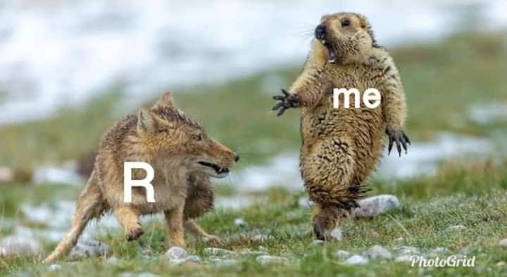
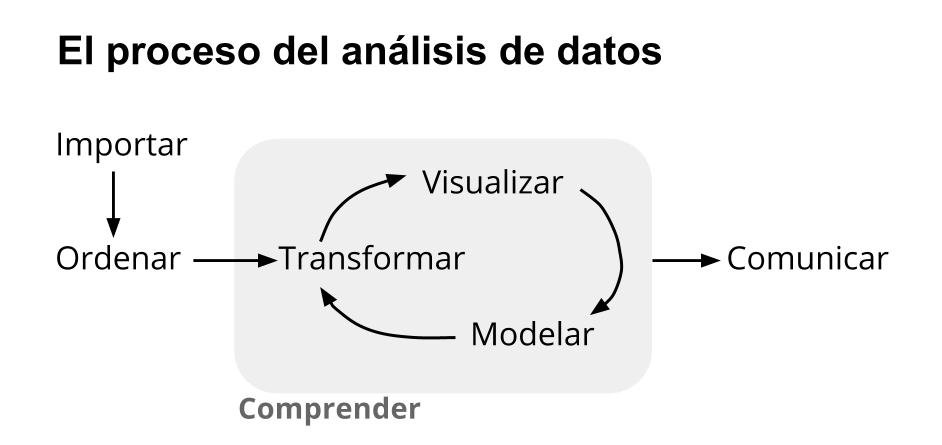
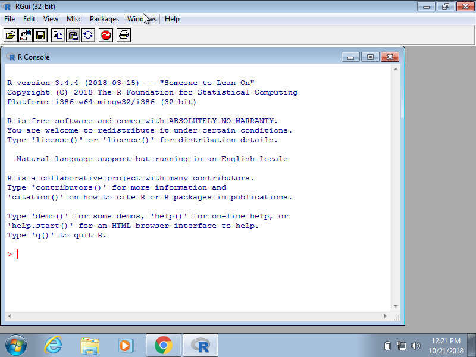
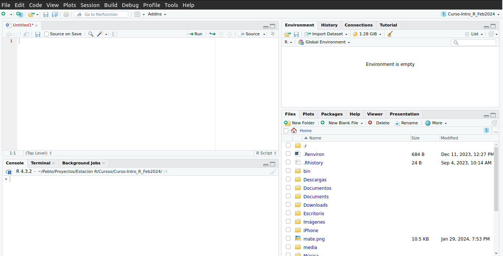
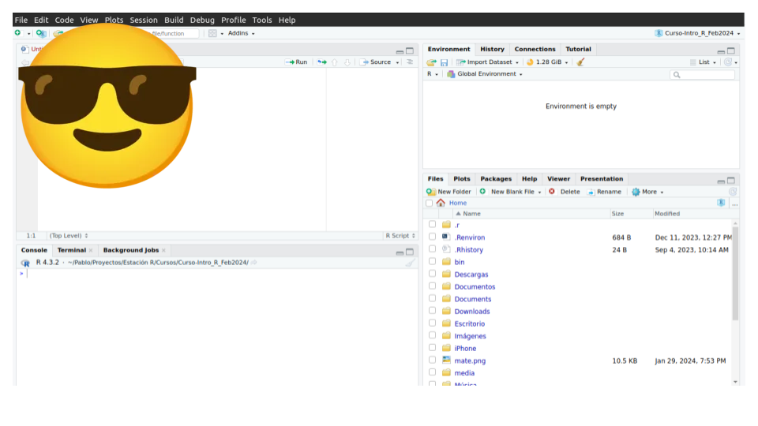
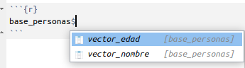

100[1] 100Fundamentos básicos del lenguaje
Dinámica de la clase
- Ejercitación semanal
- Tp Integrador
- Grabación de encuentros👋 Presentate acá
📌 ¿Qué es R?
📌 ¿Qué es la Ciencia de Datos?
📌 R != Rstudio
📌 Conceptos básicos de R
👉🏼 Valores
👉🏼 Vectores
👉🏼 Tipos / Clases
👉🏼 Data Frames





10:00 100[1] 100"cien"[1] "cien""100"c(100, 102, 200)[1] 100 102 200c("cien", "ciento dos", "doscientos")[1] "cien" "ciento dos" "doscientos"c("100", "102", "200")[1] "100" "102" "200"Las funciones en R son el alma mater del lenguaje (de todos los lenguajes)
ellas reciben un input y devuelven un output
Siempre las encontrarás escrita así:
nombre_de_la_funcion(input)
class() devuelve el tipo del valor o vector que le de (input)class(1)[1] "numeric"class("1")[1] "character"length() devuelve el largo del input (probemos con un vector):length(c(10, 20, 30))[1] 3mean() calcula el promedio de un input (tiene que ser si o si numérico):mean(c(10, 20, 30))[1] 20mean(c("10", "20", "30"))Warning in mean.default(c("10", "20", "30")): argument is not numeric or
logical: returning NA[1] NATodo en R puede ser guardado en un objeto (un valor, un vector, el resutlado de una función, y más)
Para guardar algo en un objeto, tengo que seguir la siguiente estructura:
nombre_del_objeto <- algoguardo_un_numero <- 1guardo_un_numero[1] 1guardo_un_vector <- c(10, 20, 30)guardo_un_vector[1] 10 20 30guardo_un_resultado <- mean(c(20, 45, 23))guardo_un_resultado[1] 29.33333objeto_como_input <- c(20, 45, 23)
mean(objeto_como_input)[1] 29.33333Crear un objeto con los siguientes 5 valores numéricos: 17, 92, 56, 32 y 102, y llamarlo edad_personas.
Con la función class() chequear de qué tipo es el objeto.
Con la función length() conocer la longitud de ese objeto (cuántos valores tiene).
Calcular el promedio de esos valores (la edad promedio)
Un Data Frame (o tabla) es la combinación de vectores (variables), que termina conformando una relación entre filas y columnas.
Cada vector es una columna de un dataframe, y cada uno de sus valores, en el orden en que se encuentran, conforman las filas.
data.frame(), cuyos inputs son los vectores:vector_edad <- c(20, 43, 102, 56)
vector_nombre <- c("Pepe", "Pepa", "Rigoberto", "Rodoberta")
base_personas <- data.frame(vector_edad,
vector_nombre)base_personas vector_edad vector_nombre
1 20 Pepe
2 43 Pepa
3 102 Rigoberto
4 56 RodobertaRecordar este comando:
$
$ (símbolo peso) puedo acceder a una columna del data frame:
base_personas$vector_nombre[1] "Pepe" "Pepa" "Rigoberto" "Rodoberta"El resultado de base_personas$vector_nombre es nuevamente un vector, por lo que puedo:
class(base_personas$vector_nombre)[1] "character"length(base_personas$vector_nombre)[1] 4Crear un vector llamado serie, cuyos valores son: "Berlín", "The Crown" y "Vikings".
Crear un vector llamado puntaje, cuyos valores son (agregar puntaje a gusto),
Crear un data.frame llamado netflix, que combine los vectores anteriores
Calcular el puntaje promedio de las series de Netflix.
Nos vemos el encuentro que viene.
Seguimos la comunicación entre clase y clase por Slack
Acá dejamos más ejercitación para seguir practicando